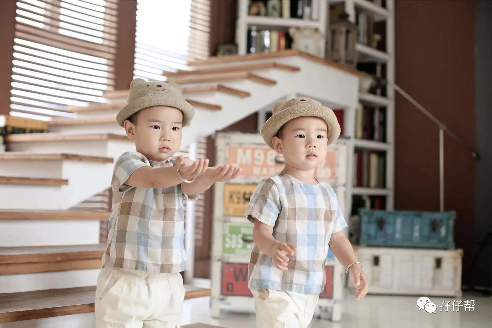
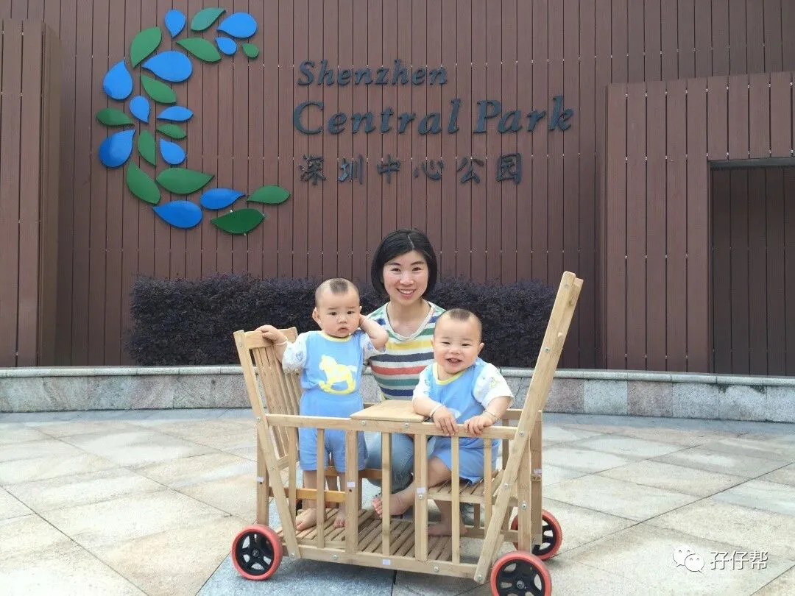

一直很想给孖仔帮写个自传，但一直搁置了。前几天孖仔帮微信社群启动了双胞胎妈妈喂养群，群里有宝妈问孖仔帮是什么机构。
我愣住了，一时语塞不知道如何解释。并不是我心里没有概念，而是因为我对孖仔帮的感情并不是三言两语可以解释清楚的！
看来是时候给孖仔帮下定义了！
深圳南山欢乐海岸，我们一家四口
[SVG Icon]
我刚知道我怀上双胎的时候，才孕八周。我和圆圈爸都是惊吓多过惊喜。
当时羊胎膜性质还处于待定状态，我自己手贱在网上搜索了下“双胞胎”，各种负面信息扑面而来，易早产，妊娠并发症，高危…..
很不幸，我全中招了。
如大多数双胎妈妈一样，兴奋之余接踵而来的是各种恐惧，担忧，惊慌….尤其是NT后，我得知是单绒双羊的胎盘性质，更加忧心忡忡了。
我试图去网络上寻找到有关单绒双羊的所有信息，试图找到同道中人或者已经卸货的宝妈给我分享些孕期经验。
但信息都是良莠不齐，模棱两可，看多了反而更加混乱迷茫，反倒被某些论坛上一些片面的负面信息吓得七魂丢了六魄。
如：双胞胎孕早期易流产，孕后期易早产，还有可能出现致死率很高的胎儿生长受限和双胎输血综合征TTTs.
我不禁发出一声叹息：为什么我们国内没有一个正规，靠谱，专业的双胞胎育儿网站或者育儿公众号呢？
虽然有很多育儿公号或育儿论坛，但只是针对单胎，大多数的经验和知识并不适用于双胎妈妈。
如:双胎做B超还要双份钱的，双胎不能做唐氏筛查，双胎很难数胎动，双胎很难足月，双胎妈妈….
怎么可能跟单胎一样呢！既然不一样，哪来的参考标准？哪来的经验借鉴？
[SVG Icon]
双胞胎是世界上独一无二且最亲密的手足，现在医学技术越来越发达，大街上出现双胞胎的概率也越来越多了，如果还没有一个专门针对双胞胎的育儿网站或者育儿公众号，让我们这些双胎妈妈情何以堪啊！
基于以上原因，
16年3月创立了孖仔帮微信公众号：babytwins-mummy
18年5月正式启动孖仔帮个人博客网站：www.sgguy.com
孖仔帮公号和个人博客网站的推文一致同步！
后续孖仔帮的所有推文也将陆续同步到各大自媒体平台，如知乎，简书，新浪微博，百家号，熊掌号，大鱼号，一点号，搜狐号，企鹅号，今日头条等。让更多双胎家庭早日找到组织。
孖仔帮不是盈利性机构，也不是公益性机构，只是一个专门针对双胞胎育儿的公众号和个人博客网站。专注双胞胎群体，不卖奶粉！不卖尿布！纯分享！纯交流！
如需查看孖仔帮往期文章，
请参考：孖仔帮：双胞胎精选文章目录表
如需加入孖仔帮微信社群，
请参考：孖仔帮·双胞胎微信交流群
[SVG Icon]
关于“孖仔帮”名称的来源
圆圈妈是土生土长的广东客家妹子，双胞胎的广东方言叫“孖仔”或“孖胎”，通过圆圈妈自身的经验分享，帮助解双胎家庭在育儿道路上少走弯路。
因此“孖仔帮”应运而生！
关于双胞胎兄弟—圆圆&圈圈
英文名Ben & Sen，简称 ”SB兄弟”！
深圳龙华上河坊，圆圈2岁5个月成长照
圆圈兄弟在娘肚子里呆了268天（孕周35周+5天）就迫不及待蹦出来了。出生于2015年07月18日，出生时体重5.3斤/5.2斤，评分均是10分。没有进温箱，但因身体发育不完善，在新生儿科分别呆了9天/11天。
目前圆圈哥俩三岁啦，即将迎来他们人生中与社会的第一次亲密接触---新生入园！
关于圆圈妈
在我还没有当妈之前，我有一个非常“小萝莉”的名字--小佩佩，还有一个经过众多亲朋好友一致投票通过的代号：资深屌丝女+腐女一枚。
现在为人妻为人母，家有孖仔男宝两枚，统称圆圈妈。
深圳中心公园，圆圈妈和圆圈兄弟
我不是高逼格的育儿专家，也不是某名牌大学的教育学者，更不是一个出色的模范妈妈。我只是一个普通的双胎妈妈。
和很多新手妈妈一样，在养育双胞胎孩子的过程中，因为经验不足，走了很多弯路，有苦有乐，又笑有泪，有很多失败的教训，也有很多靠谱的经验。
人生苦短，想把育儿道路上这些酸甜苦辣，在有限的时间内，写一些有价值的，靠谱的，实用的，接地气的经验分享传递给各位双胎妈妈。
包括自己孕育双胎过程中那些小忐忑，小惊喜，还有养育双胎过程中那些小纠结，小困惑，以及为人父母后的心态和对育儿路上的心得感悟。
圆圈妈的寄语：
希望我的经验分享可以让准双胞胎妈妈汲取到正能量的信息，静待足月平安分娩。
让已经卸货升级的双胎辣妈在这里能有所收获和启发，从容淡定地应付“落霞与孤鹜齐飞，奶水与屎尿共存”的酸爽日子。
让众多双胎家庭在这里找到共鸣和归属感，平常心对待同时养育双胞胎宝宝的酸甜苦辣，喜怒哀乐。
希望我真诚的态度，走心的文字，用心的交流将和手机另一端的你，有着美丽的邂逅和默契的共鸣，陪伴着彼此在双胎育儿道路上，更顺利，更快乐。
同时，这也是我为双胞胎圆圈兄弟精心准备的一份成长大礼包。因为里面的经验分享全是有关我和圆圈爸在养育圆圈兄弟的点点滴滴。
我希望有一天圆圈兄弟看到孖仔帮能无比骄傲地对外宣称：”我们的娘亲是个高逼格的双胎妈妈！”
最后，欢迎更多的双胞胎爸爸妈妈关注孖仔帮，跟圆圈妈一起交流，分享，探讨从双胞胎孕期，分娩，坐月子，婴幼儿护理，辅食喂养，亲子阅读，亲子教育。
感恩，谢谢大家！
--------------------------------------------------------------------2018.07.18 圆圈妈妈
阅读原文

